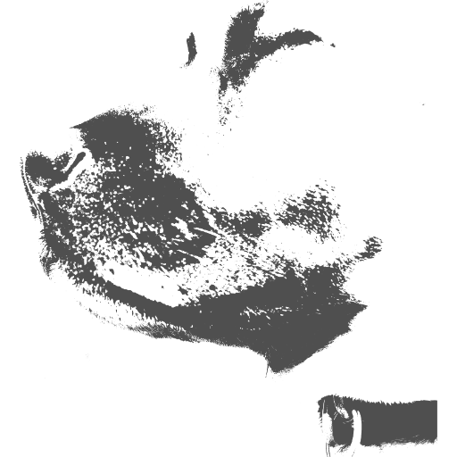

design and animation
Experienced in creating digital and practical creations using Open Source tools. Whether this be 3D modelled, stop-motion animation or 2D/3D digital or physical art.

we create.
We are manic palm studios — a creative collective focused on building meaningful experiences. Our approach combines thoughtful design with technical excellence.
From concept to execution, we work on projects that are meaningful to us and can be passed on to others to enjoy.
Every project is chosen to push our boundaries and create something that lasts.
Experienced in creating digital and practical creations using Open Source tools. Whether this be 3D modelled, stop-motion animation or 2D/3D digital or physical art.
Our in-house architectural tools provide the foundations required in our pursuit to create art. Open Source is a passion, and we use and support this throughout our studio.
We enjoy bringing aged and derilict properties back to life using low impact modern materials. This often requires the creation of new objects designed specifically for a space.
We are not currently accepting any external submissions as we are focused on completing our internal projects. If you would like to know more, please feel free to get in touch with us on Mastodon. Our community is invite-only, so request a follow and once we review the request, we will welcome you to our close-knit group.